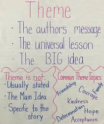
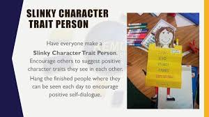
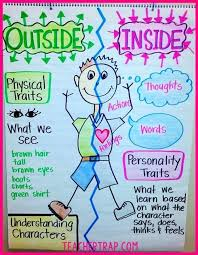
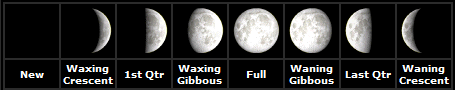
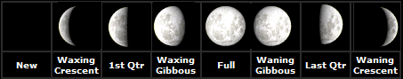

🚀 Week 28 of 35 — Unit 6: Earth, Space & Beyond
Week #: 28 of 35 (Unit 6, week 3 of 6) Dates: Mar 28 – Mar 30, 2027 | Unit: Unit 6: Earth, Space, and Beyond | |
Unit Padlet
Practice Websites
Grammar Quest - Daily Oral Language
Maths Quest Pro - Master Your Math Facts!
Extra Math Resources
Unit 1: Math (Place Value and Operations)
Unit 2: Math (Measurement and Data)
Unit 4: Math (Multiplication and Division)
Unit 6: Math (Algebra, FDP, Fractions)
Class | Sunday | Monday | Tuesday | Wednesday | Thursday |
This week's updates / notes: | Long weekend Wed Mar 31 & Thu Apr 1 (MoEHE) — 3-day week: Sun Mar 28, Mon Mar 29, Tue Mar 30 only. SPIRIT WEEK. Star of the Quarter — Reem/Aziz will do the greeting. Grey italic text = added in the October 2026 template update (not in the original plan). | No notes for this day. | No notes for this day. | No students this day: any lessons planned below for this day need to be moved. | No students this day: any lessons planned below for this day need to be moved. |
Morning Meeting / SEL | 5A - Individual Activity to Whole Group Meeting 5B - One to One Enrichment 5C - Morning Practice | 5A - Individual Activity to Whole Group Meeting 5B - One to One Enrichment 5C - Morning Practice | 5A - Individual Activity to Whole Group Meeting 5B - One to One Enrichment 5C - Morning Practice | 5A - Individual Activity to Whole Group Meeting 5B - One to One Enrichment 5C - Morning Practice | 5A - Individual Activity to Whole Group Meeting 5B - One to One Enrichment 5C - Morning Practice |
Literacy: Vocabulary & Spelling Standards | CC L.5.4, L.5.6 · EE.L.5.4, EE.L.5.6 | CC L.5.4, L.5.6, L.5.2.E, RF.5.3 · EE.L.5.4, EE.L.5.6, EE.L.5.2.H, EE.RF.5.3 | CC L.5.4, L.5.6 · EE.L.5.4, EE.L.5.6 | No students this day (see notes). | No students this day (see notes). |
Literacy: Vocabulary & Spelling Activities/Tasks (Differentiation) Routine: give the definition first (no guessing) → students share where they might use it, similar/different words. Morphology, examples/non-examples, synonyms/antonyms & more on the vocabulary cards: Vocabulary Padlet (incl. Spelling: words Mon · test Thu) | G5: dialect — A particular form of a language that is specific to a region or social group. G3: debate — A formal discussion in which opposing arguments are presented. Unit: eclipse — When one object in space blocks the light of another, casting a shadow. | G5: expressive — Effectively showing or communicating thoughts and feelings. G3: dispute — A disagreement or argument about something important. Unit: conserve — To protect something from harm, loss, or waste; to use carefully and sparingly. Spelling — introduce Week 28 lists (practice all week). Low (Building Spelling Skills, List 28): put, push, pull, could, would, found, round, around, something, brown High (Building Spelling Skills, List 28): hopeless, careless, homeless, tireless, hopeful, fearful, cheerful, careful, graceful, happily, friendly, angrily, swiftly, suddenly, darkness, goodness, sadness, kindness | G5: versatile — Able to adapt or be adapted to many different functions or activities. G3: procession — A group of people or vehicles moving forward in an orderly line, often as part of a ceremony. Unit: circumstance — A fact or condition connected with an event or action. | G5: diligent — Having or showing care and effort in one's work or duties. G3: recall — To remember something from the past. Unit: privilege — A special right, advantage, or benefit granted to a particular person or group. | G5: adept — Very skilled or proficient at something. G3: absorb — To take in or soak up knowledge, liquid, or information. Unit: expedition — A journey or voyage undertaken by a group for a specific purpose, such as exploration or research. |
Literacy: Vocabulary & Spelling Assessment (Differentiation) | Quick check: Use today's word in a spoken or written sentence. Low: match the word to a picture or definition. Mid: complete a sentence frame. High: write an original sentence. | Quick check: Use today's word in a spoken or written sentence. Low: match the word to a picture or definition. Mid: complete a sentence frame. High: write an original sentence. | Quick check: Use today's word in a spoken or written sentence. Low: match the word to a picture or definition. Mid: complete a sentence frame. High: write an original sentence. | No students this day (see notes). | Spelling test — Week 28 lists (Low: List 28 · High: List 28). |
Literacy: Reading Standards | CC RL.5.2 · EE.RL.5.2 | CC RL.5.2 · EE.RL.5.2 | CC RL.5.3 · EE.RL.5.3 | No students this day (see notes). | No students this day (see notes). |
Literacy: Reading Activities/Tasks (Differentiation) | Guided Reading: Rotations (12-15 min each) — Group 1: RIT Score Pack with teacher · Group 2: Independent Reading · Group 3: Task Cards · Group 4: IXL/SeeSaw IXL: G2 Determine the Theme · G3 Determine the Theme · G4 Determine the Theme  SeeSaw: Theme Practice · Theme vs Main Idea | Guided Reading: Quick Review of Theme. Rotations (12-15 min each) — Group 1: RIT Score Pack with teacher · Group 2: Independent Reading · Group 3: Task Cards · Group 4: IXL/SeeSaw IXL: G2 Determine the Theme · G3 Determine the Theme · G4 Determine the Theme SeeSaw: Theme Practice · Theme vs Main Idea | Guided Reading: Rotations (12-15 min each) — Group 1: RIT Score Pack with teacher · Group 2: Independent Reading · Group 3: Task Cards · Group 4: IXL/SeeSaw IXL: G3 Character Traits · G4 Character Traits · G5 Character Traits · G1 Character Dialogue for Traits SeeSaw: Character and Settings Review · Alexander Who's Not Going to Move · Chrysanthemum · FAST Model Anchor charts / resources (from the 2025-26 plan): (I Do) Show examples of character traits (We Do) Practice creating a character trait profile https://drive.google.com/file/d/1LFUfblVLE5GlVeuk8cyI6wHd8fziqxb6/view?usp=drive_link  | Guided Reading: Quick Review of Character Traits — Rotations: worksheet  Rotations (12-15 min each) — Group 1: RIT Score Pack with teacher · Group 2: Independent Reading · Group 3: Task Cards · Group 4: IXL/SeeSaw IXL: G3 Character Traits · G4 Character Traits · G5 Character Traits · G1 Character Dialogue for Traits SeeSaw: Character and Settings Review · Alexander Who's Not Going to Move · Chrysanthemum · FAST Model | Guided Reading: Review/Catch-up. |
Literacy: Reading Assessment (Differentiation) | Exit check: Short task on today's focus: determine a theme from details in the text. Low: point to or say the answer with picture/word-bank support. Mid: answer with a sentence frame. High: write a short answer using evidence from the text. | Exit check: Short task on today's focus: determine a theme from details in the text. Low: point to or say the answer with picture/word-bank support. Mid: answer with a sentence frame. High: write a short answer using evidence from the text. | Exit check: Short task on today's focus: compare and contrast characters, settings or events using details. Low: point to or say the answer with picture/word-bank support. Mid: answer with a sentence frame. High: write a short answer using evidence from the text. | No students this day (see notes). | No students this day (see notes). |
Literacy: Writing / Language Standards (Language Sun & Tue · Writing Mon & Wed · Thu catch-up) | CC L.5.4.A · EE.L.5.4 | CC W.5.3 · EE.W.5.3 | CC L.5.5.C, L.5.6 · EE.L.5.5, EE.L.5.6 | No students this day (see notes). | No students this day (see notes). |
Literacy: Writing / Language Activities/Tasks (Differentiation) IXL this week: Low: Multiple-meaning words with pictures (G2) High: Which definition matches the sentence? (G3) · Choose the synonym (G3) Stretch: Which definition matches the sentence? (G4) · Choose the antonym (G4) | Grammar (Sun) — Multiple-Meaning Words & Context Clues OBJ: Use context clues to determine correct word meaning Packets — Low (K-1): K: Review — Antonyms and Category Words, G1: L3.14 Multiple-Meaning Words · Mid (2-3): G2: L3.21 Multiple-Meaning Words, G3: L3.20 Multiple-Meaning Words · High (4-6): G4: L3.18 Multiple-Meaning Words, G5: L3.7 Homophones — Past/Passed (extend to context clues), G6: L3.7 Multiple-Meaning Words Space vocabulary: orbit (verb/noun), space (outer vs. room), launch (verb/noun), mission. | Writing — Write the beginning A strong beginning introduces the character in the setting, then the problem. Model drafting the class story's beginning from the story-map; students write theirs. Grammar link: past-tense verbs — narratives are told in the past. TWR: write from the jots — each beginning jot becomes a sentence; expand the opening sentence with where and when; the Week 1 appositive character-introduction leads it off. Resources: How to Catch a Star — read aloud (Padlet mentor read-alouds) IXL: Descriptive details (G2) — Character emotions and traits (G3) — Stretch: Narrative point of view (G4) — Varied sentences (G5) | Grammar (Tue) — Synonyms & Antonyms OBJ: Identify synonyms and antonyms; use synonyms to improve word choice Packets — Low (K-1): K: L4.7 Antonyms, G1: L3.11 Synonyms, G1: L3.12 Antonyms · Mid (2-3): G2: L3.18 Synonyms, G2: L3.19 Antonyms, G3: L3.18 Synonyms and Antonyms · High (4-6): G4: L3.16 Synonyms and Antonyms, G5: Review: Ch. 3 Lessons 1-9 (word choice review), G6: L3.4 Synonyms and Antonyms Big/enormous/vast are synonyms. | Writing — Write the middle: "Show, Don't Tell" Model turning a flat sentence ("She was scared.") into a Show-Don't-Tell sentence ("Her hands shook as she stared at the door.") with feeling and sense words; students write the middle — events in order — with at least one Show-Don't-Tell sentence. TWR: show-don't-tell = expansion with How? — interrogate the flat sentence: How do we know? What did her hands do? Differentiation: Low/Med feeling-word bank + frame ("___ felt ___ because ___."); High adds two Show-Don't-Tell sentences. Resources: Show, Don't Tell — "Show, Don't Tell" 16-chart pack (Padlet charts) — word bank: feeling + five-senses words | Catch-up day — reteach or extend this week's grammar and writing; finish unfinished drafts; assign this week's IXL practice (links in the left column: Low = reteach, High = consolidate, Stretch = extension). |
Literacy: Writing / Language Assessment (Differentiation) | Language check: Write 3 to 5 sentences that apply today's rule; use this week's IXL skill. Low: K-1 packet page with teacher support. Mid: Grades 2-3 packet page. High: Grades 4-6 packet page or IXL Stretch. | Writing check: Check today's writing against the co-built rubric (one target from today's lesson). Low: oral rehearsal first, then a sentence frame or labelled picture. Mid: word bank and a partner check. High: independent, plus one stretch goal. | Language check: Write 3 to 5 sentences that apply today's rule; use this week's IXL skill. Low: K-1 packet page with teacher support. Mid: Grades 2-3 packet page. High: Grades 4-6 packet page or IXL Stretch. | No students this day (see notes). | No students this day (see notes). |
Math Standards (pacing W27, from the Awsaj Math Curriculum) | STANDARD 1. Fractions to percentages: 6.RP.A.3 2. Equivalent fractions, decimals and percentages: 4.NF.C.6; 6.RP.A.3 3. Order fractions, decimals and percentages: 4.NF.A.2 (EE: M.EE.4.NF.2); 6.RP.A.3 4. Percentage of an amount – one step: 6.RP.A.3 | PRIORITY 1. Fractions to percentages: 6.RP.A.3 2. Equivalent fractions, decimals and percentages: 4.NF.C.6; 6.RP.A.3 3. Order fractions, decimals and percentages: 4.NF.A.2 (EE: M.EE.4.NF.2); 6.RP.A.3 | INTERVENTION 1. Y5/Gr.4 · Divide by 10, 100 and 1,000: (no code in the math curriculum) 2. Y5/Gr.4 · Find fractions equivalent to a non-unit fraction: (no code in the math curriculum) 3. Y5/Gr.4 · Fraction of an amount: (no code in the math curriculum) | ||
Math Activities/Tasks (Differentiation) Pacing W27 · B9 Fractions, decimals and percentages W25–W28 | STANDARD · ~4 new / wk 1. Fractions to percentages 6.RP.A.3 ▶ VIDEO · GUIDE · SLIDES · PPT · LESSON · SHEET · DISPLAY · ANSWERS · T/F · PRE-TEACH · TA SHEET · TA ANS · TRANSCRIPT 2. Equivalent fractions, decimals and percentages 4.NF.C.6 6.RP.A.3 ▶ VIDEO · GUIDE · SLIDES · PPT · LESSON · SHEET · DISPLAY · ANSWERS · T/F · PRE-TEACH · TA SHEET · TA ANS · TRANSCRIPT 3. Order fractions, decimals and percentages 4.NF.A.2 6.RP.A.3 ▶ VIDEO · GUIDE · SLIDES · PPT · LESSON · SHEET · DISPLAY · ANSWERS · T/F · PRE-TEACH · TA SHEET · TA ANS · TRANSCRIPT 4. Percentage of an amount – one step 6.RP.A.3 ▶ VIDEO · GUIDE · SLIDES · PPT · LESSON · SHEET · DISPLAY · ANSWERS · T/F · PRE-TEACH · TA SHEET · TA ANS · TRANSCRIPT End of Block 8 · Decimals Differentiation: Each lesson includes opportunities for partner practice, common misperceptions, independent practice, and a challenge question for differentiation. | PRIORITY · ~3 new / wk 1. Fractions to percentages 6.RP.A.3 ▶ VIDEO · GUIDE · SLIDES · PPT · LESSON · SHEET · DISPLAY · ANSWERS · T/F · PRE-TEACH · TA SHEET · TA ANS · TRANSCRIPT 2. Equivalent fractions, decimals and percentages 4.NF.C.6 6.RP.A.3 ▶ VIDEO · GUIDE · SLIDES · PPT · LESSON · SHEET · DISPLAY · ANSWERS · T/F · PRE-TEACH · TA SHEET · TA ANS · TRANSCRIPT 3. Order fractions, decimals and percentages 4.NF.A.2 6.RP.A.3 ▶ VIDEO · GUIDE · SLIDES · PPT · LESSON · SHEET · DISPLAY · ANSWERS · T/F · PRE-TEACH · TA SHEET · TA ANS · TRANSCRIPT 1× support block — pick from the panel below End of Block 8 · Decimals Differentiation: Each lesson includes opportunities for partner practice, common misperceptions, independent practice, and a challenge question for differentiation. | INTERVENTION · ~2 new / wk 1. Y5/Gr.4 · Divide by 10, 100 and 1,000 ▶ VIDEO · GUIDE · SLIDES · PPT · LESSON · SHEET · DISPLAY · ANSWERS · T/F · PRE-TEACH · TA SHEET · TA ANS · TRANSCRIPT 2. Y5/Gr.4 · Find fractions equivalent to a non-unit fraction ▶ VIDEO · GUIDE · SLIDES · PPT · LESSON · SHEET · DISPLAY · ANSWERS · T/F · PRE-TEACH · TA SHEET · TA ANS · TRANSCRIPT 3. Y5/Gr.4 · Fraction of an amount ▶ VIDEO · GUIDE · SLIDES · PPT · LESSON · SHEET · DISPLAY · ANSWERS · T/F · PRE-TEACH · TA SHEET · TA ANS · TRANSCRIPT 2× support block — pick from the panel below End of Block 8 · Decimals Differentiation: Each lesson includes opportunities for partner practice, common misperceptions, independent practice, and a challenge question for differentiation. | ||
Math: Support Block Activities/Tasks (pick one) | Rec/PK4 · Bonds to 10 (2 parts) · Rec/PK4 · Doubles to 10 (make a double) · Y1/KG · Compare numbers · Y2/Gr.1 · Count in fractions up to a whole · Y3/Gr.2 · Complements to 100 · Y4/Gr.3 · Divide a 2-digit number by a 1-digit number (2) · Y4/Gr.3 · Subtract from mixed numbers · Y4/Gr.3 · Hundredths as decimals · Y5/Gr.4 · Divide by 10, 100 and 1,000 · Y5/Gr.4 · Find fractions equivalent to a non-unit fraction · Y5/Gr.4 · Fraction of an amount · Y5/Gr.4 · Thousandths as decimals · Y5/Gr.4 · Understand percentages · Y5/Gr.4 · Percentages as fractions · Y5/Gr.4 · Percentages as decimals · Y5/Gr.4 · Equivalent fractions, decimals and percentages | ||||
Math Assessment (Differentiation) | Pre-check: Quick pre-check on this week's skills (IXL formative pre-test or 3 questions from the first lesson). | Exit check: 2 to 3 questions from each strand's SHEET or T/F slide at the end of the lesson. Intervention: with the TA sheet and concrete materials. Priority: partner then independent. Standard: independent plus the challenge question. | Exit check: 2 to 3 questions from each strand's SHEET or T/F slide at the end of the lesson. Intervention: with the TA sheet and concrete materials. Priority: partner then independent. Standard: independent plus the challenge question. End of block: End of Block 8 · Decimals Version A · Version A · Answers · Version B · Version B · Answers · SATs practice question bank | No students this day (see notes). | No students this day (see notes). |
Science and/or Social Studies Standards Explore | 5-ESS1-2 | 5-ESS1-2 | 5-ESS1-2 | No students this day (see notes). | No students this day (see notes). |
Activities/Tasks (Differentiation) Explore 3-day plan (Mon–Wed) The Moon — Phases & Craters IXL this week: Low: The Night Sky (Gr 1) · High: Identify Phases of the Moon (Gr 4) Stretch: Identify Phases of the Moon (Gr 5) · Lunar Eclipses (Gr 5) | Review / catch-up — revisit last week's Explorer learning; finish unfinished investigations or SeeSaw posts; preview this week's topic. | Mon · Hook + Investigate ▶ Hook video: National Geographic ‘Moon 101’ (≈4 min) Vocab: phase, crater, surface, gravity, lunar month. Why Does the Moon Change Shape? Starter (7 mins): show Moon-phase images — “Sometimes it’s a bright circle, sometimes just a little sliver.” Big Question: “Why does the Moon seem to change its shape?” Teach: there are 8 phases; the Moon cycles through them in about 29.5 days (a lunar month). Watch ‘Moon 101’ (above) / ‘Tour of the Moon’ (NASA Goddard) + Apollo 11 real landing footage (AP) — Padlet. Phases of the Moon Information. Objective: Explain that the Moon appears to change shape because it cycles through 8 phases in about 29.5 days. Explorer photos / resources (from last year's plans): There are eight phases of the moon The phases are named after how much of the moon we can see, and whether the amount visible is increasing, or decreasing each day. Phases of the moon as seen in the Northern Hemisphere  Phases of the moon as seen in the Southern Hemisphere  | Tue · Apply + Record Investigate — Moon Craters: Making an Impact! Materials per group: a tray of flour 2–3 cm deep, cocoa/dark powder sifted on top, 3 plasticine balls. “Space explorers! What do you see on the Moon’s surface — what shapes or marks?” Drop the balls to make impact craters; observe & record size/shape. NASA — craters on the Moon. Objective: Explain that craters on the Moon's surface form from the impact of objects hitting it. Apply — Oreo Moon Phases: model the 8 phases with sandwich cookies, then label them (SeeSaw). SciShow Kids: Why Does the Moon Change? (~4 min, replaces dead link) — Padlet. Book: Moon Phases Collection (Epic). Worksheet: Phases of the Moon Labelling Activity Sheet (Twinkl). Objective: Model and label the 8 phases of the Moon in the correct order. | Wed · Review + Check Review: sequence the 8 moon phases (new → full → new); quick check. Reading (Gr 2-3): 'The Moon Changes Shape' (Grade 2-3 Readings Pack) · Readings Pack — ADD PADLET LINK Moon Craters book: The Moon (Epic) — Worksheet: Surface of the Moon Labelling Activity Sheet (Twinkl). Working link (new): The Moon (Epic · from Padlet Day 3 post) Showcase: moon facts & lines; begin building exhibition models. Objective: Sequence the 8 Moon phases in order from new moon to full moon and back again. | Review / catch-up — consolidate Mon–Wed learning; complete recordings/reflections; reteach or extend as needed. |
Assessment (Differentiation) Explore | Review check: Students explain one thing they remember from the last Explore lesson, using a key word from the unit. Low: point and say with a picture. Mid: sentence frame. High: written explanation. | Assessment: Name at least two Moon phases shown in images and state roughly how long a full cycle takes. Differentiation: name a Moon phase from a picture + adult support / name two or more Moon phases independently from pictures / name the 8 phases in order and explain the ~29.5-day cycle independently | Assessment: Drop a plasticine ball into the flour tray and record the size/shape of the crater it makes. Differentiation: make and observe one crater with adult support / make and record a crater independently / make, compare, and explain how multiple craters form independently Assessment: Arrange Oreo-cookie models of the Moon phases in order and label each one. Differentiation: label a pre-arranged set of phases + adult support / arrange and label the phases independently with a word bank / arrange and label all 8 phases in order independently without support | Assessment: Review: sequence the 8 moon phases (new → full → new); quick check. Differentiation: sequence 4 key phases with picture cards + adult support / sequence all 8 phases independently with picture cards / sequence all 8 phases from memory and name each one independently | No students this day (see notes). |